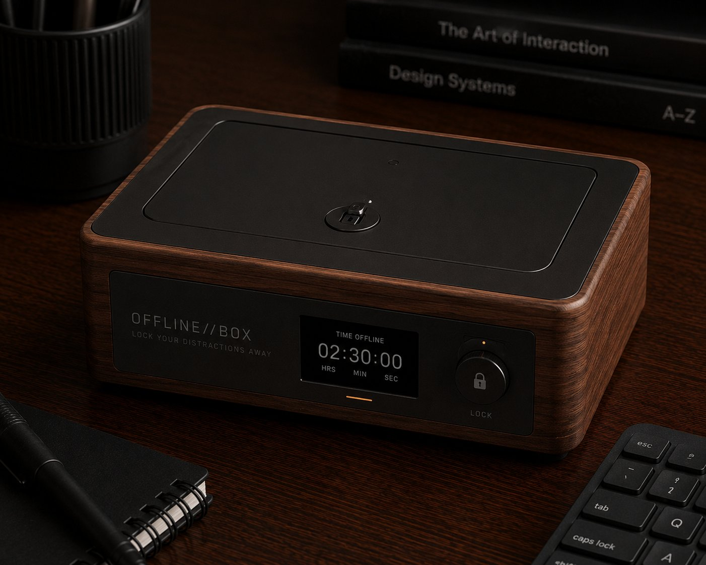
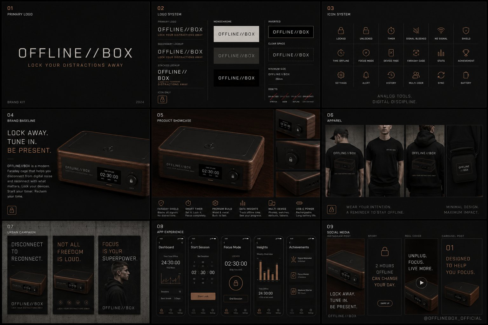

A signal-blocking lockbox built into a piece of furniture. Place your phone inside, lock it, and the metal lining cuts the signal while a timer counts your offline minutes. A daily commitment to disconnect.
Drop the phone into the velvet-lined cradle. The copper mesh closes the cage.
Wind the timer to your chosen length. The lid latches; the mechanism holds it shut until done.
Walk away. Read, cook, talk, sleep. The phone is not coming out before the timer finishes.
The mesh is the firewall. No signal in, no signal out. The phone doesn't compromise this.
Timer logs every offline minute. Companion app turns it into a ritual you can see grow over weeks.
A box at the dinner table or by the front door. A shared commitment to the room you're in.
Walnut, brass, copper. The box belongs on a shelf, not in a drawer. Heirloom-grade material.
Single-phone, multi-phone, family chest. The shape stays; the volume scales.
Mechanical timer, key lock, or both. The standard locks for an hour at a time; pro is open-ended.

Offline//Box rides the productivity-and-detox wave. Single-phone box for early backers; family editions and locking variants unlocked at higher pledge tiers. Designed to outlast every phone you put in it.